4.1. Interfaz de Punto de Venta¶
Ubique y seleccione en el menú de ADempiere, la carpeta “Gestión de Ventas”, luego seleccione la carpeta “Órdenes de Venta”.

Imagen 1. Menú de ADempiere
Podrá visualizar la carpeta “Órdenes de Venta”, con la ventana “Órdenes de Venta”, que permite crear y modificar las mismas. Adicional a ello, también contiene la carpeta “Punto de Venta”, con el formulario del punto de venta y el smart browser de cierre de caja.

Imagen 2. Ventana Órdenes de Venta
Seleccione el formulario “Punto de Venta” que se encuentra dentro de la carpeta “Punto de Ventas”.

Imagen 3. Selección de Formulario Punto de Venta
Podrá visualizar la ventana del formulario “Punto de Venta”, con diferentes campos que permiten registrar en ADempiere de manera fácil y sencilla, la venta de los productos.

Imagen 4. Ventana del Formulario Punto de Venta
4.1.1. Panel de Socio de Negocios¶
Permite realizar una búsqueda detallada de todos los socios del negocio registrados en ADempiere, que tengan coincidencia con lo que se introduzca en los campos o filtros de búsqueda. De igual manera, permite registrar en ADempiere, los socios del negocio.
Imagen 5. Panel de Socio de Negocios

Note
La acción de búsqueda se ejecuta automáticamente al ingresar el valor en el campo o filtro de búsqueda.
4.1.1.1. Búsqueda de Socio del Negocio¶
Para buscar un socio del negocio desde el formulario del punto de venta, se debe realizar el siguiente procedimiento.
Seleccione el icono “Buscar”, ubicado en la parte superior del campo “Socio de Negocios”.

Imagen 6. Icono Buscar
Podrá visualizar la ventana “Socios del Negocio”, con diferentes campos que permiten filtrar la búsqueda del socio dependiendo de la información ingresada en los mismos.
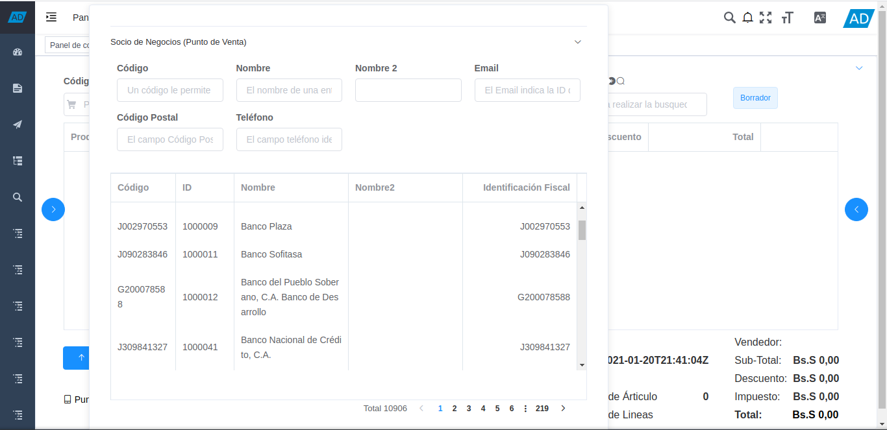
Imagen 7. Ventana de búsqueda de Socios del Negocio
Note
Al tener registrados muchos socios del negocio, se muestra por páginas, la información de todos los socios del negocio. Indicando en la parte inferior de la ventana, el total de socios del negocio registrados, las páginas para navegar y la cantidad de páginas por la consulta.
Introduzca en el campo “Código”, el número de identificación del socio del negocio por el cual requiere filtrar la búsqueda.
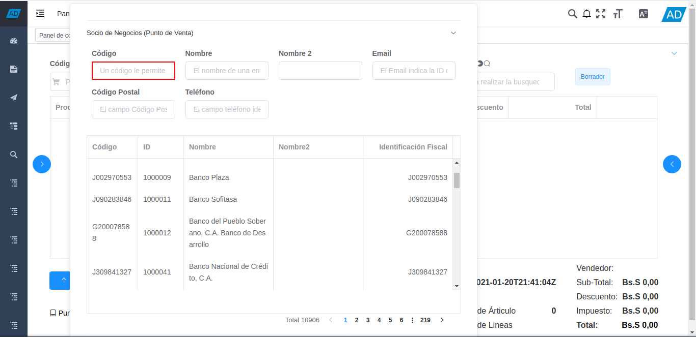
Imagen 8. Campo Código
Introduzca en el campo “Nombre”, el nombre del socio del negocio por el cual requiere filtrar la búsqueda.

Imagen 9. Campo Nombre
Introduzca en el campo “Nombre 2”, el apellido o el segundo nombre del socio del negocio por el cual requiere filtrar la búsqueda.

Imagen 10. Campo Nombre 2
Introduzca en el campo “Email”, la dirección de correo electrónico del socio del negocio por el cual requiere filtrar la búsqueda.

Imagen 11. Campo Email
Introduzca en el campo “Código Postal”, el código postal del socio del negocio por el cual requiere filtrar la búsqueda.

Imagen 12. Campo Código Postal
Introduzca en el campo “Teléfono”, el número de teléfono del socio del negocio por el cual requiere filtrar la búsqueda.

Imagen 13. Campo Teléfono
La búsqueda de información del socio del negocio es visualizada en la parte inferior de la ventana, debajo de los campos o filtros de búsqueda. Esta información puede variar, dependiendo de los valores ingresados en dichos campos o filtros de búsqueda.

Imagen 14. Resultado de Búsqueda
Al seleccionar el socio del negocio, este se carga a la orden de venta como cliente de dicha venta.

Imagen 15. Cliente desde Icono Buscar
Adicional a ello, también se puede buscar el registro de un socio del negocio desde el formulario “Punto de Venta”, ingresando en el campo “Socio de Negocios”, el número de identificación, nombre o apellido del mismo.
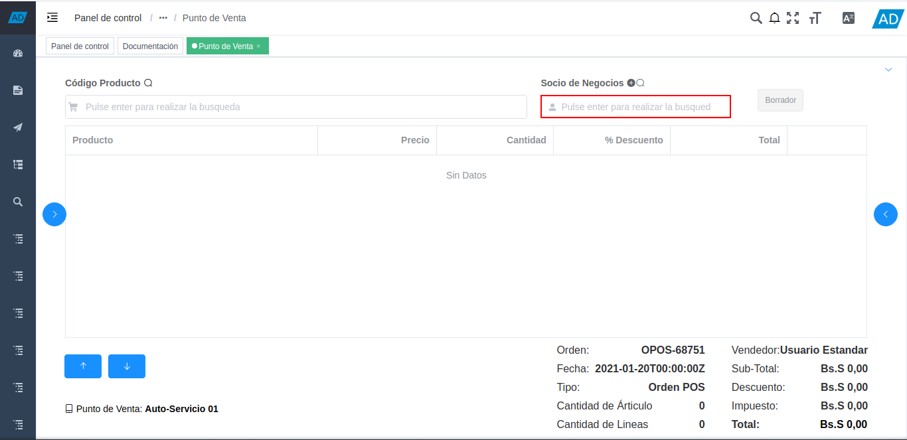
Imagen 16. Búsqueda por el campo Socio de Negocios
Al seleccionar el socio del negocio, este se carga a la orden de venta como cliente de dicha venta.

Imagen 17. Cliente desde Campo Socio del Negocio
4.1.1.2. Registro de Socio del Negocio¶
Para registrar un socio del negocio desde el formulario del punto de venta, se debe realizar el siguiente procedimiento.
Seleccione el icono “Más”, ubicado en la parte superior del campo “Socio de Negocios”.

Imagen 18. Icono Más
Podrá visualizar la ventana de registro del socio del negocio, con diferentes campos que permiten realizar un regitro rápido y sencillo del cliente.

Imagen 19. Ventana de Registro de Socio del Negocio
Introduzca en el campo “Código”, el número de identificación del socio del negocio que se encuentra registrando.

Imagen 20. Campo Código
Introduzca en el campo “Nombre”, el nombre del socio del negocio que se encuentra registrando.

Imagen 21. Campo Nombre
Introduzca en el campo “Nombre 2”, el apellido o segundo nombre del socio del negocio que se encuentra registrando.

Imagen 22. Campo Nombre 2
Introduzca en el campo “Email”, el correo electrónico del socio del negocio que se encuentra registrando.

Imagen 23. Campo Email
Introduzca en el campo “Teléfono”, el número de teléfono del socio del negocio que se encuentra registrando.

Imagen 24. Campo Teléfono
Seleccione el campo “Localización/Dirección”, para que sean desplegados los campos necesarios para registrar la dirección del socio del negocio.

Imagen 25. Campo Localización / Dirección
Seleccione en el campo “País”, el país de localización del socio del negocio que se encuentra registrando.

Imagen 26. Campo País
Seleccione en el campo “Región”, la región de localización del socio del negocio que se encuentra registrando.

Imagen 27. Campo Región
Seleccione en el campo “Ciudad”, la ciudad de localización del socio del negocio que se encuentra registrando.

Imagen 28. Campo Ciudad
Introduzca en el campo “Dirección 1”, la dirección de localización del socio del negocio que se encuentra registrando.

Imagen 29. Campo Dirección 1
Introduzca en el campo “Dirección 2”, otra dirección de localización del socio del negocio que se encuentra registrando.

Imagen 30. Campo Dirección 2
Introduzca en el campo “Dirección 3”, otra dirección de localización del socio del negocio que se encuentra registrando.

Imagen 31. Campo Dirección 3
Introduzca en el campo “Dirección 4”, otra dirección de localización del socio del negocio que se encuentra registrando.

Imagen 32. Campo Dirección 4
Introduzca en el campo “Código Postal”, el código postal del socio del negocio que se encuentra registrando.

Imagen 33. Campo Código Postal
Seleccione la opción “Cancelar”, para cancelar el registro del socio del negocio que se encuentra registrando.

Imagen 34. Opción Cancelar
Seleccione la opción “OK”, para guardar el registro del socio del negocio que se encuentra registrando.

Imagen 35. Opción OK
Al guardar el socio del negocio, este se carga a la orden de venta como cliente de dicha venta.

Imagen 36. Cliente desde Registro Nuevo de Socio del Negocio
4.1.2. Panel de Búsqueda de Productos¶
Permite realizar una búsqueda rápida de todos los productos para la venta registrados en ADempiere, que tengan coincidencia con lo que se introduzca en el campo o filtro de búsqueda. Para buscar un producto desde el formulario del punto de venta, se debe realizar el siguiente procedimiento.
Introduzca el código o nombre del producto en el panel de búsqueda de productos.

Imagen 37. Panel de Búsqueda de Productos
Note
La acción de búsqueda se ejecuta automáticamente al ingresar el valor en el campo o filtro de búsqueda.
Al seleccionar el producto buscado, se carga de manera automática a la línea de la orden que se encuentra realizando.

Imagen 38. Resultado de Búsqueda del Producto en el Panel
Adicional a ello, se puede realizar una búsqueda detallada de los productos para la venta, registrados en ADempiere. Para realizar dicha búsqueda se debe seleccionar el icono “Buscar”, ubicado en la parte superior del campo “Código Producto”.

Imagen 39. Icono Buscar
Podrá visualizar la ventana de búsqueda de productos con el campo o filtro de búsqueda “Código Producto”, que permite realizar la búsqueda en base a los ingresado en el mismo. Además, contiene una tabla que detalla los resultados por coincidencias de la búsqueda.
“Coincidencia por Código de Producto”: Permite buscar el producto por el código de identificación del mismo.
“Coincidencia por Nombre de Producto”: Permite buscar el producto por el nombre del mismo.
“Coincidencia por Lista de Precio”: Muestra la lista de precio del producto buscado.
“Coincidencia por Precio”: Muestra el precio del producto buscado.
Note
La acción de búsqueda se ejecuta automáticamente al ingresar el valor en el campo o filtro de búsqueda.

Imagen 40. Resultado de Búsqueda en el Panel de Búsqueda de Producto
Al seleccionar el producto buscado, se carga de manera automática a la línea de la orden que se encuentra realizando.

Imagen 41. Resultado de Búsqueda del Producto en el Icono
4.1.3. Estado de la Orden¶
El formulario “Punto de Venta” cuenta con el campo “Estado del Documento”, este se encuentra ubicado del lado derecho del campo “Socio del Negocio”.
Este campo incica el estado en el que se encuentra el registro de la orden en el cual se encuentra ubicado.

Imagen 42. Campo Estado del Documento
4.1.4. Catálogo de Productos¶
El catálogo de productos en el punto de ventas, puede ser configurado dependiendo de los requerimientos del usuario, este se puede configurar por categorías o grupos de productos. Para ello es necesario crear las categorías on grupos de productos, registrando sus respectivos productos en cada uno y estableciendo el orden de los mismos.
Luego de crear y configurar las categorías o grupos de productos, se procede a crear el catálogo de productos y agregar al mismo las diferentes categorías o grupos creados anteriormente, estableciendo su respectivo orden.
Dicho catálogo permite que los productos sean cargados a la línea de la orden de venta mediante la selección de los mismos. Para ello, se debe realizar lo siguiente:
Seleccione el icono “<” ubicado del lado derecho del formulario “Punto de Venta”, para mostrar el catálogo de productos previamente configurado.

Imagen 43. Icono <
Podrá visualizar un panel en la parte derecha del formulario “Punto de Venta”, con el catálogo de productos previemante configurado.

Imagen 44. Catálogo de Productos
En el catálogo de productos se visualizan las categorías o grupos de productos, donde se debe seleccionar la categoría o grupo en el cual se encuentra el producto.

Imagen 45. Selección de Categoría de Producto
Seleccione el producto que requiere agregar a la línea de la orden que se encuentra realizando.

Imagen 46. Selección de Producto en la Categoría
Podrá visualizar de la siguiente manera el producto cargado a la línea de la orden desde el catálogo de productos.

Imagen 47. Producto Cargado desde Catálogo de productos
Para salir de la categoría en la que se encuentra, debe seleccionar la opción “Catálogo Principal”, para regresar a la vista principal del catálogo de productos.

Imagen 48. Opción Regresar del Catálogo de Productos
De igual manera, puede regresar a la vista principal del catálogo de productos, seleccionando el icono “Inicio”, ubicado debajo del nombre de la categoría o grupo de productos.

Imagen 49. Icono Inicio
Seleccione nuevamente el icono “>”, para ocultar el catálogo de productos.
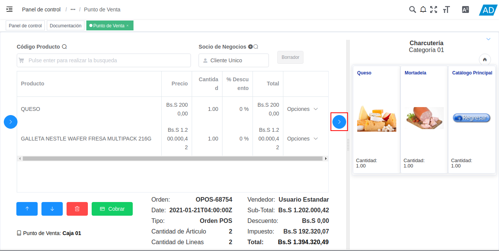
Imagen 50. Ocultar Catálogo de Productos
4.1.5. Líneas de la Orden¶
Podrá visualizar los productos cargados a la orden con su respectiva información en la sección de líneas de la orden, ubicada en el centro del formulario.
Dicha sección cuenta con cinco columnas que muestran el nombre del producto, el precio unitario, la cantidad cargada del mismo, su porcentaje de descuento y el total a pagar del producto. Adicional a ello, cuenta con la opción “Opciones” en cada línea de producto cargado a la orden, que permite realizar diferentes acciones.
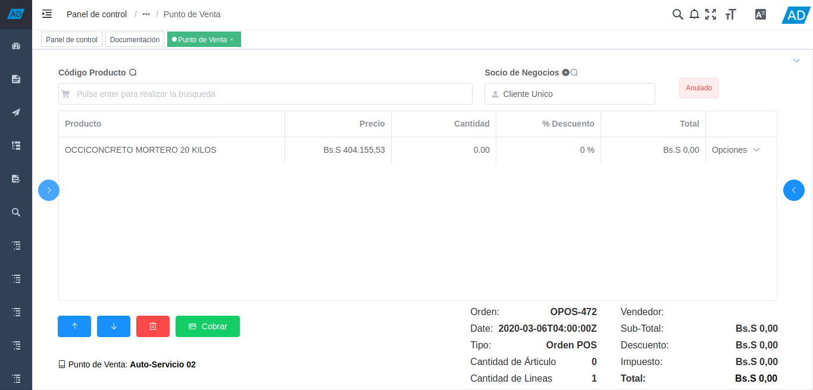
Imagen 51. Sección Líneas de la Orden
Para visualizar la información del producto cargado a la línea de la orden, seleccione la opción “Opciones” al final de la lína del producto y luego seleccione la opción “Información de Producto”.

Imagen 52. Opción Información del Producto
Podrá visualizar la siguiente ventana con la información del producto.
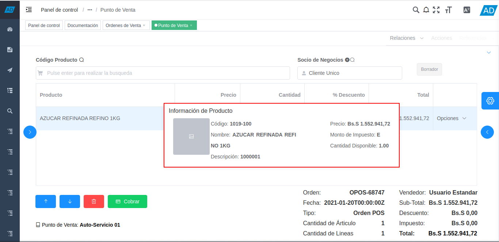
Imagen 53. Información del Producto
Para modificar la cantidad del producto cargado a la línea de la orden, seleccione la opción “Opciones” al final de la lína del producto y luego seleccione la opción “Editar Cantidades”.

Imagen 54. Opción Editar Cantidades del Producto
Podrá visualizar una ventana con el campo “Cantidad”, donde puede modificar la cantidad del producto para ingresar la cantidad requerida.

Imagen 55. Campo Cantidad de la Opción Editar Cantidades del Producto
Para eliminar el producto de la línea de la orden, seleccione la opción “Opciones” al final de la lína del producto y luego seleccione la opción “Eliminar”.

Imagen 56. Opción Eliminar Producto
4.1.6. Información de la Orden¶
En la parte inferior derecha del formulario “Punto de Venta”, se puede visualizar la siguiente información:
El campo “Orden”, indica el número de la orden que se encuentra realizando.
El campo “Fecha”, indica la fecha en la cual se esta realizando la orden de venta. Esta fecha no puede ser modificada, recuerde que las transacciones realizadas desde el punto de venta serán generadas a la fecha que se indica en este campo.
El campo “Tipo”, indica el tipo de documento con el cual se esta generando la orden de venta que se encuentra realizando.
El campo “Cantidad de Árticulo”, la cantidad total de los árticulos que posee la orden de venta.
El campo “Cantidad de Líneas”, la cantidad total de líneas de productos que posee la orden de venta.
El campo “Vendedor”, indica el nombre del agente comercial (vendedor) que se encuentra realizando la orden de venta.
El campo “Sub-Total”, indica el monto total de la orden sin impuestos.
El campo “Descuento”, indica el monto total del descuento aplicado a la orden.
El campo “Impuesto”, indica el monto total del impuesto aplicado a la orden.
El campo “Total”, indica el monto total de la orden con descuento e impuestos.
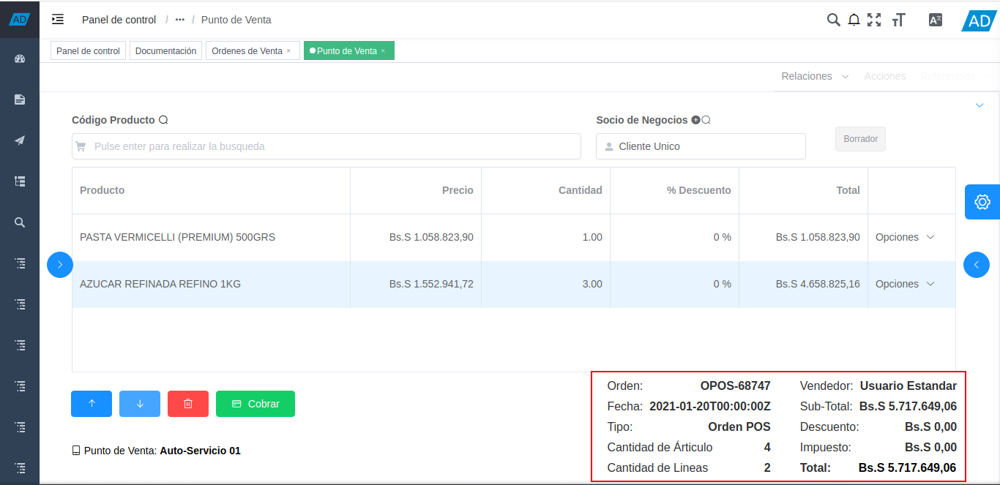
Imagen 57. Información de la Orden de Venta
Para visualizar el monto total de la orden de venta convertido en otra moneda, haga clic sobre el monto de la orden en el campo “Total”.

Imagen 58. Campo Total
Podrá visualizar la ventana del total de la orden, con el campo “Moneda”, donde debe seleccionar la moneda a la cual requiere realizar la conversión.

Imagen 59. Ventana Convertir Cantidad
En el encabezado de la ventana, se muestra el monto total de la orden, convertido a la moneda seleccionada previamente.
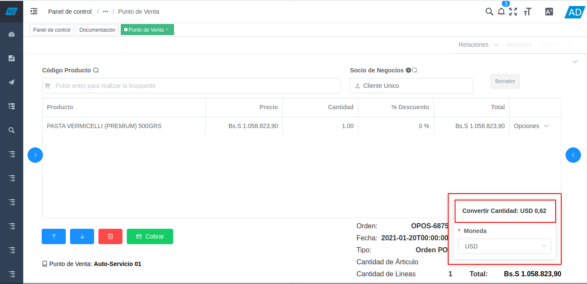
Imagen 60. Monto Total Convertido
4.1.7. Opciones del Punto de Venta¶
Para posicionarse en cualquier línea de producto de la orden que se encuentra realizando, puede hacer clic sobre la misma o seleccionar los iconos de “Posicionamiento” ubicados en la parte inferior izquierda del formulario “Punto de Venta”. Donde el primer icono permite posicionarse en el “Registro Anterior”, y el segundo icono permite posicionarse en el “Registro Siguiente”.
Imagen 61. Iconos de Posicionamiento
De igual manera, puede eliminar el registro del producto donde se encuentra posicionado, seleccionando el icono “Eliminar” ubicado en la parte inferior izquierda del formulario “Punto de Venta”.
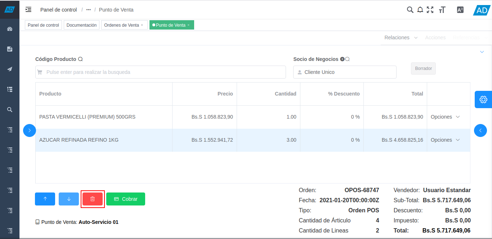
Imagen 62. Icono Eliminar
Seleccione el icono “Cobrar”, para realizar el cobro de la orden de venta que se encuentra realizando.

Imagen 63. Icono Cobrar
Para cambiar de terminal PDV en el formulario del punto de venta, seleccione la opción “Punto de Venta” ubicada en la parte inferior izquierda del formulario.

Imagen 64. Opción Punto de Venta
Seleccione el terminal PDV con el que requiere realizar las operaciones de venta.
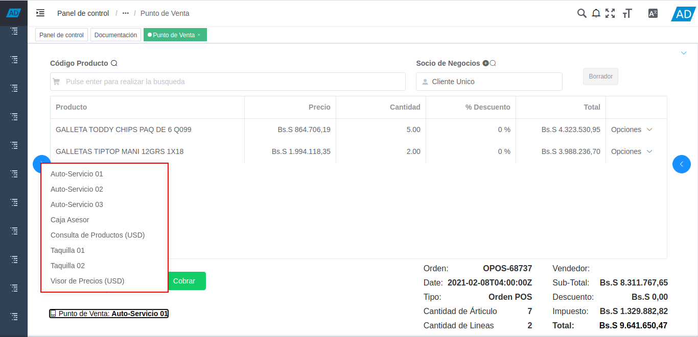
Imagen 65. Seleccionar Terminal PDV
Podrá visualizar el cambio de terminal de la siguiente manera.

Imagen 66. Cambio de Terminal PDV
4.1.8. Opciones Rápidas del Punto de Ventas¶
El punto de ventas contiene un panel de opciones rápidas que permite acceder a diferentes procesos y ejecutarlos según sea el requerimiento del usuario en dicho momento. El panel cuenta con tres carpetas que contienen los procesos en base a su función. Para acceder al panel y sus diferentes opciones, debe realizar lo siguiente.
Seleccione el icono “>” ubicado del lado izquierdo del formulario “Punto de Venta”, para mostrar el panel de acceso a los procesos del punto.

Imagen 64. Icono >
Podrá visualizar el panel con tres carpetas.

Imagen 65. Carpetas del Panel de Procesos
Seleccione la carpeta “Orden de Venta”, para acceder a los diferentes procesos que contiene el punto de venta.
Esta carpeta contiene todos los procesos necesarios para realizar correctamente la gestión de ventas desde el formulario “Punto de Venta”.
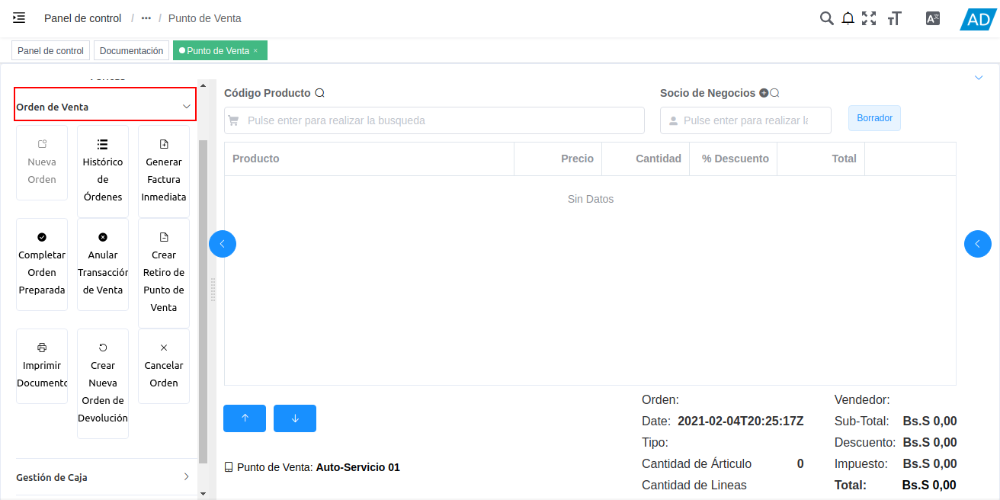
Imagen 66. Carpeta Orden de Venta
Dichos procesos se explican a continuación.
Seleccione la opción Nueva Orden para crear un nuevo registro en el formulario “Punto de Venta” y poder proceder a crear una nueva orden de venta.

Imagen 67. Opción Nueva
Note
Esta opción se encuentra disponible solo cuando se encuentre ubicado en algún registro de orden de venta en el formulario “Punto de Venta”.
Seleccione la opción Histórico de Órdenes para realizar una búsqueda de las diferentes órdenes de venta, sin importar el estado de documento en el que se encuentren.

Imagen 68. Opción Histórico de Órdenes
Podrá visualizar la ventana “Histórico de Órdenes”, con diferentes campos que permiten filtrar la búsqueda de información en base a lo que sea ingresado en los mismos.

Imagen 69. Ventana Histórico de Órdenes
Ingrese en el campo “No. del Documento”, el número de documento de la orden que requiere ubicar.
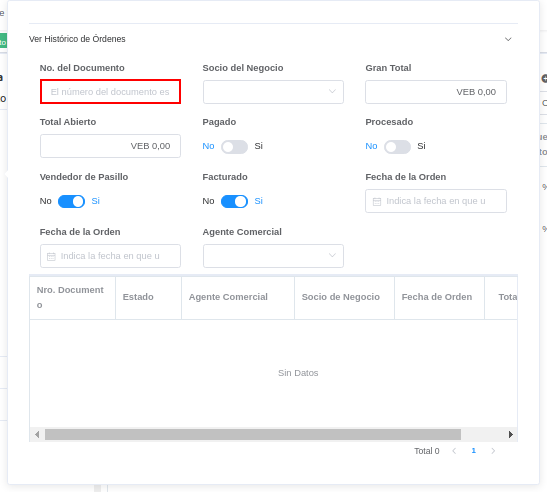
Imagen 70. Campo No. Del Documento
Seleccione en el campo “Socio del Negocio”, el socio del negocio cliente de la orden que requiere ubicar.

Imagen 71. Campo Socio del Negocio
Introduzca en el campo “Gran Total”, el monto total de la orden que requiere ubicar.

Imagen 72. Campo Gran Total
Introduzca en el campo “Total Abierto”, el monto total por pagar de la orden que requiere ubicar.
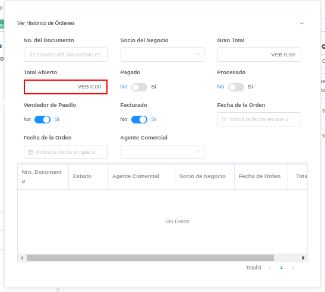
Imagen 73. Campo Total Abierto
Indique en el campo “Pagado”, si la orden que requiere ubicar fue pagada.
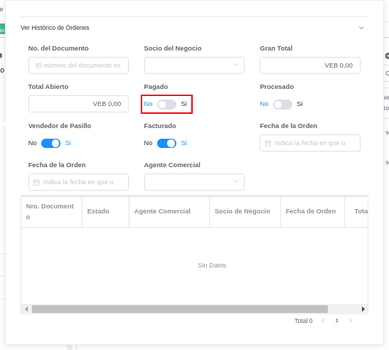
Imagen 74. Campo Pagado
Indique en el campo “Procesado”, si la orden que requiere ubicar fue procesada.

Imagen 75. Campo Procesado
Indique en el campo “Vendedor de Pasillo”, si la orden fue creada por un vendedor de pasillo.
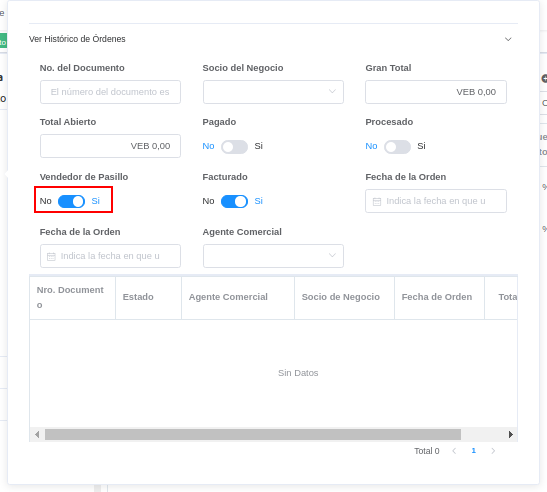
Imagen 76. Campo Vendedor de Pasillo
Indique en el campo “Facturado”, si la orden que requiere ubicar fue facturada.

Imagen 77. Campo Facturado
Introduzca en los campo “Fecha de la Orden”, el rango de fecha en la que fue creada la orden que requiere ubicar.

Imagen 78. Campo Fecha de la Orden
Seleccione en el campo “Agente Comercial”, el nombre del vendedor que realizó la orden que requiere ubicar.

Imagen 79. Campo Agente Comercial
Al ingresar algún valor en los campos o filtros de búsqueda anteriormente explicados, la búsqueda se realiza de manera automática y el resultado de la misma se refleja en la tabla ubicada debajo de dichos campos o filtros.
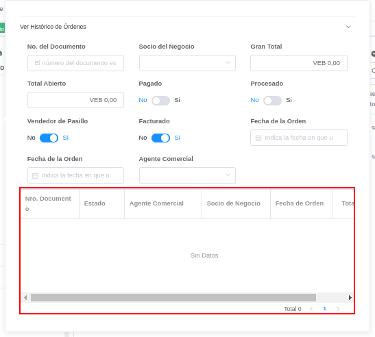
Imagen 80. Resultados de la Búsqueda
Seleccione la opción Generar Factura Inmediata: Al seleccionar esta opción, permite generar una factura desde el punto de venta.

Imagen 81. Opción Generar Factura Inmediata
Seleccione la opción Completar Orden Preparada: Esta opción permite imprimir una factura desde el punto de venta, sin realizar ningún tipo de cobro.
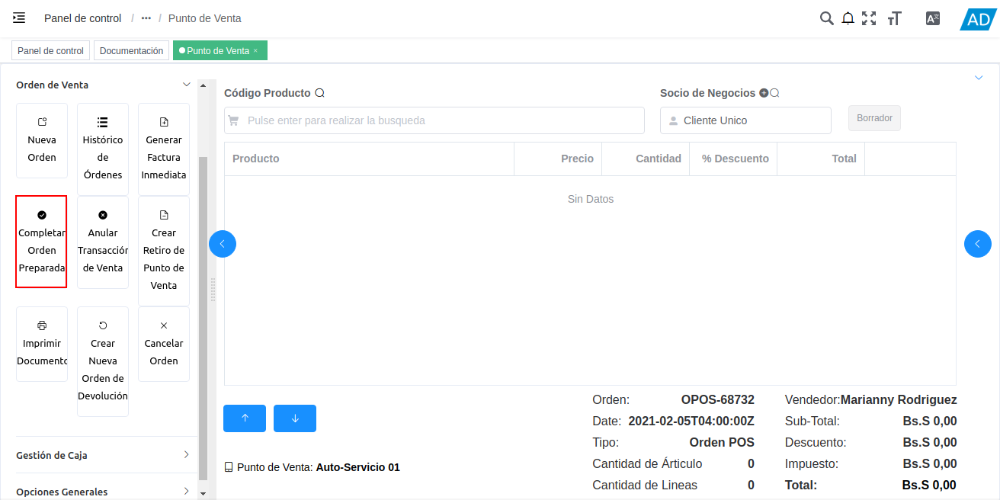
Imagen 82. Opción Completar Orden Preparada
Seleccione la opción Anular Transacción de Venta: Al seleccionar esta opción, se anula la transacción de venta realizada, generando una “Orden de Devolución”, una “Devolución” y una “Nota de Crédito”, para reflejar el ingreso de los productos por la devolución y el egreso monetario recibido por la venta de dichos productos.

Imagen 83. Opción Anular Transacción de Venta
Seleccione la opción Crear Retiro de Punto de Venta: Esta opción permite acceder al proceso de retiro de fondos del punto de venta.

Imagen 84. Opción Crear Retiro
Seleccione la opción Imprimir Documento: Al seleccionar esta opción, cuando la orden de venta se encuentra en estado “Borrador”, se genera un reporte para visualizar la orden de venta que esta realizando en el punto de venta. Dicho reporte es visualizado en la ventana “Informe”. Al seleccionar esta opción, cuando la orden de venta se encuentra en estado “Completo”, se imprime la orden de venta.

Imagen 85. Opción Imprimir Documento
Seleccione la opción Crear Nueva Orden de Devolución: Esta opción permite realizar una devolución parcial de la venta realizada.

Imagen 86. Opción Crear Nueva Orden de Devolución
Seleccione la opción Cancelar Orden: Al seleccionar esta opción, se cancela o anula la orden de venta que esta realizando el usuario vendedor y dicha orden deja de estar disponible.

Imagen 87. Opción Cancelar Orden
Seleccione la carpeta “Gestión de Caja”, para acceder a los procesos de apertura retiro y cierre de caja contiene el punto de venta.

Imagen 88. Carpeta Gestión de Caja
Seleccione la opción “Apertura de Caja”, para realizar el proceso de apertura de caja del punto de venta.
Esta opción permite realizar el ingreso monetario de la caja por concepto de apertura de la misma.

Imagen 89. Opción Apertura de Caja
Seleccione la opción “Retiro de Efectivo”, para realizar el proceso de retiro de dinero de la caja.

Imagen 90. Opción Retiro de Efectivo
Seleccione la opción “Cierre de Caja”, para realizar el proceso de cierre del cajad del punto de venta.

Imagen 91. Opción Cierre de Caja
Seleccione la carpeta “Opciones Generales”, para acceder a los procesos generales del punto de venta.

Imagen 92. Carpeta Opciones Generales
Seleccione la opción “Cambiar Punto de Venta”, para cambiar de punto de venta (Terminal PDV), sin necesidad de cerrar sesión y volver a iniciar.
Para cambiar de rol, simplemente se debe seleccionar la opción “Cambiar Punto de Venta” y finalmente seleccionar el terminal del punto de venta con el cual requiere realizar sus operaciones.

Imagen 93. Opción Cambiar Punto de Venta
Podrá visualizar los diferentes terminales de punto de venta configurados para el usuario con el cual inicio sesión. Seleccione la opción del punto de venta con el cual requiere realizar las ventas.
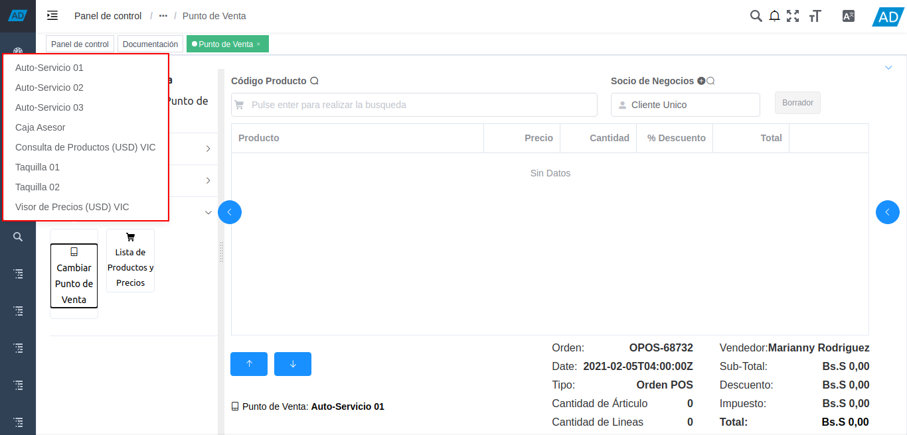
Imagen 94. Opciones de Punto de Venta
Al seleccionar cualquiera de los terminales de punto de venta, podrá visualizar el cambio en el campo “Punto de Venta” del formulario “Punto de Venta”.

Imagen 95. Resultado de Cambio de Punto de Venta
Seleccione la opción “Lista de Productos y Precios”, para realizar una consulta detallada de los productos como la consulta del icono “Buscar”, del panel de búsqueda de productos del punto de venta, explicado en el procedimiento Panel de Búsqueda de Productos, del presente material.
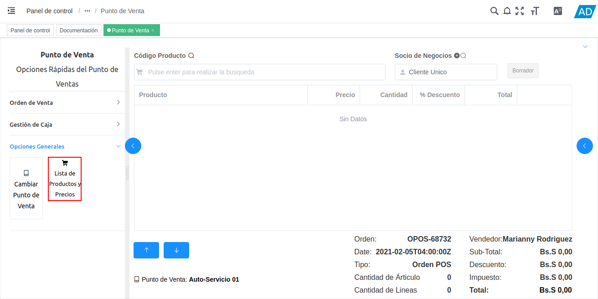
Imagen 96. Opción Lista de Productos y Precios
Seleccione nuevamente el icono “<”, para ocultar el panel.

Imagen 97. Ocultar Panel de Opciones Rápidas